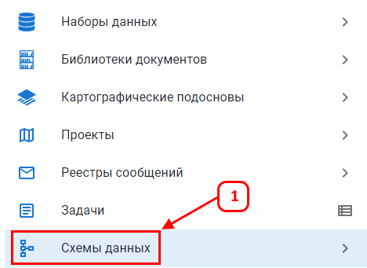
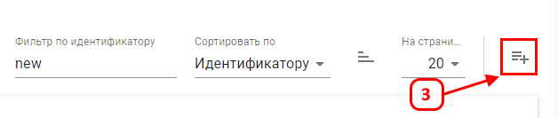
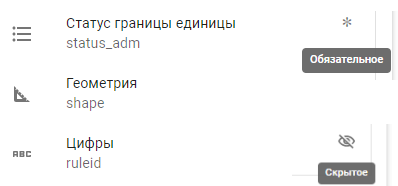

Схемы данных
Схема данных — это техническое описание содержимого слоев или библиотек в формате JSON.
Данный раздел (1) предназначен для просмотра, создания или редактирования схем, из которых в дальнейшем создаются векторные слои или библиотеки.

В левой части интерфейса содержится список доступных к выбору схему.
Схемы можно фильтровать (2) по уникальному идентификатору и названию схемы
Кнопка (3) позволяет создать новую схему данных в формате JSON.

В правой части монитора для выбранной схемы отображаются все атрибуты, используемые в этой схеме.
